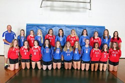

| Home | Volleyball | Career | Pets |
|  |
Volleyball is a team sport in which two teams of six players are on dofferent sides of a net. Each team tries to score points by hittinig a ball on the other team's court under organized rules. Only the serving team may score a point, except in the deciding game when a rally-point scoring is used. When the receiving team wins a rally, it gives the right to serve also scoring a point, and its players rotate one position clockwise. Rotatation makes sure that players play at both the net and the back zone of the court.A team wins a game by scoring 25 points with a two-point advantage and wins the match by winning the best of two or three games. In the event of a 25-25 tie, the team scoring the 27th point wins a game.
the history of volleyball. On February 9, 1895, in Holyoke, Massachusetts, William Morgan a YMCA physical education director, created a new game called Mintonette as a game to be played indoors and by any number of players. The game took some of its characteristics from tennis and handball.So, he borrowed. From basketball, he took the ball. From tennis the net. The use of hands and the ability to play off the walls and over hangs, he borrowed from handball. And, from baseball, he took the concept of innings.He termed this new game "Mintonette". And though admittedly incomplete, it proved successful enough to win an audience at the YMCA Physical Director's Conference held in Springfield, Massachusetts the next year.It was at this conference that Dr. Alfred Halstead, a professor at Springfield College, suggested a two-word version of its present name. "Volley Ball". And we still play it today!
I started play volleyball when I was 10. When I first started playing I played at the YMCA (which is now the Core.)I am #5. Our coach for the team was Randy Cook but he has resienged. I play middle back and back left and sometimes laberro. A labbero wears a different color jersey and that means they play solely in the back row.